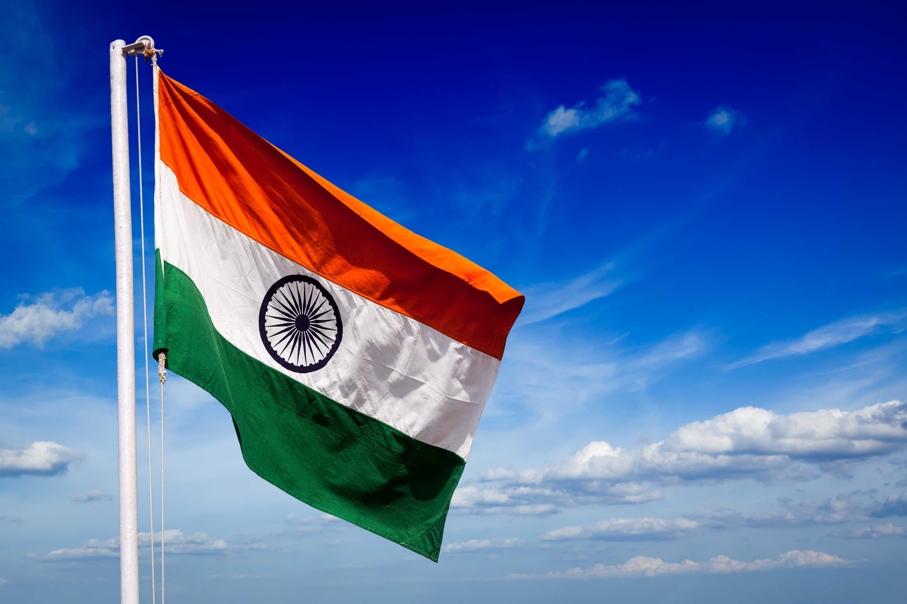

Time to Pack Your Bag
Photo Tour of India
List
- Indian Flag
- Indian Map
India, country that occupies the greater part of South Asia. It is made up of 28 states and eight union territories, and its national capital is New Delhi, built in the 20th century just south of the historic hub of Old Delhi to serve as India’s administrative center. Its government is a constitutional republic that represents a highly diverse population consisting of thousands of ethnic groups and hundreds of languages. India became the world’s most populous country in 2023, according to estimates by the United Nations.
Flag of India

The national flag of India, colloquially called Tiraṅgā (the tricolour), is a horizontal rectangular tricolour flag, the colours being of India saffron, white and India green; with the Ashoka Chakra, a 24-spoke wheel, in navy blue at its centre. It was adopted in its present form during a meeting of the Constituent Assembly held on 22 July 1947, and it became the official flag of the Union of India on 15 August 1947. The flag was subsequently retained as that of the Republic of India. In India, the term "tricolour" almost always refers to the Indian national flag.

Map of India
The flag was subsequently retained as that of the Republic of India. In India, the term "tricolour" almost always refers to the Indian national flag. Also, Indai has 29 States and 8 Union territories